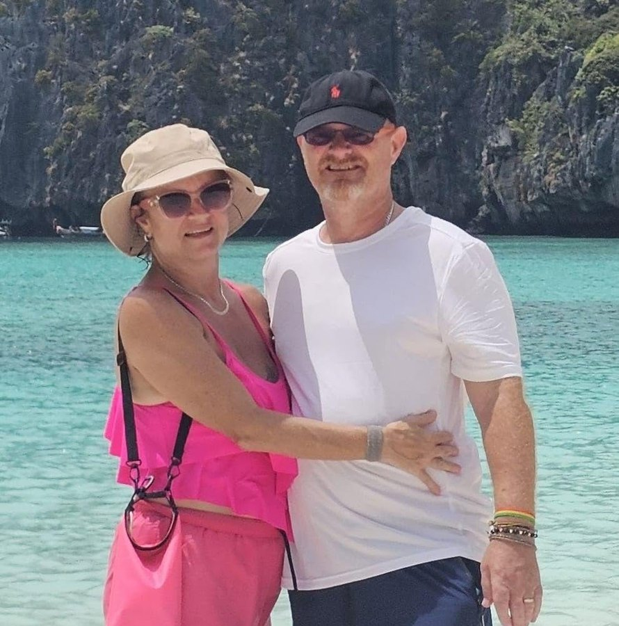

Max & Ray
Max and Ray in action with the Surf Club community.

Max & Ray
Max and Ray, both from the UK, were involved in the very early meetings of the Koh Samui Surf Lifesaving Club and have been important supporters from the beginning.
They very generously donated a large amount of equipment for the children, including floaties, goggles, bags and medical equipment, helping provide some of the essential gear needed to get the club's programs up and running.
Ray has also played an integral role in the administration of the club. Each week, he has diligently recorded the distances swum by the children and compiled the club's swimming records, creating an important record of the progress the kids are making.
Their early belief in the vision of the club, combined with their ongoing practical support, has made a real difference. We are extremely grateful to Max and Ray for everything they have contributed to the Koh Samui Surf Lifesaving Club.